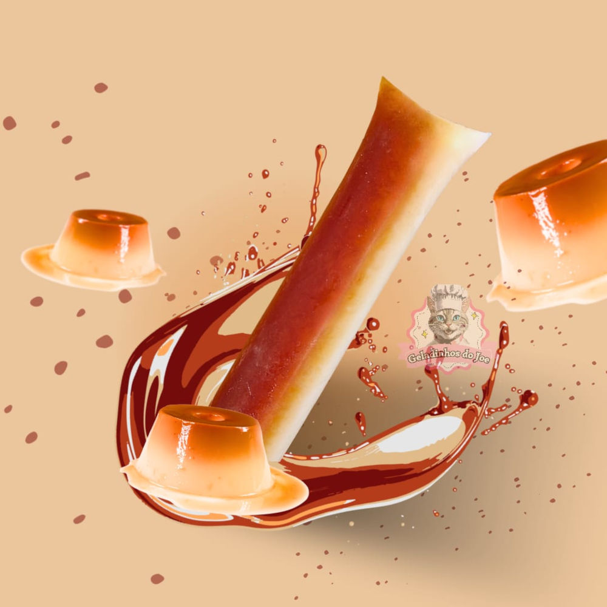
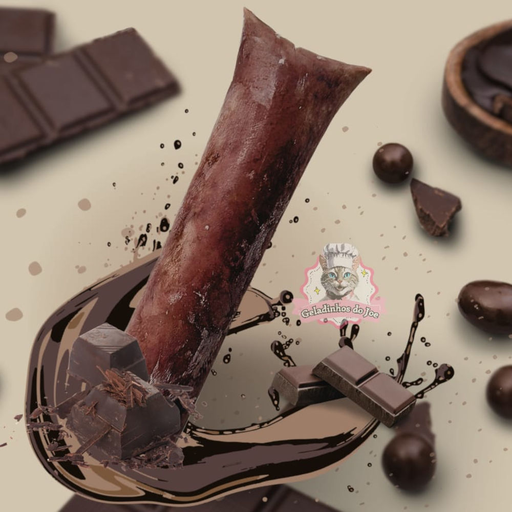
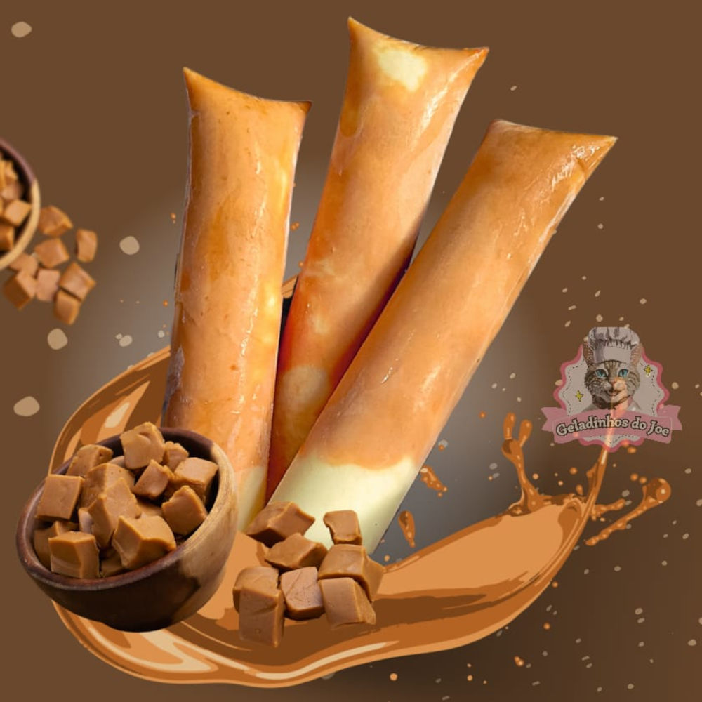
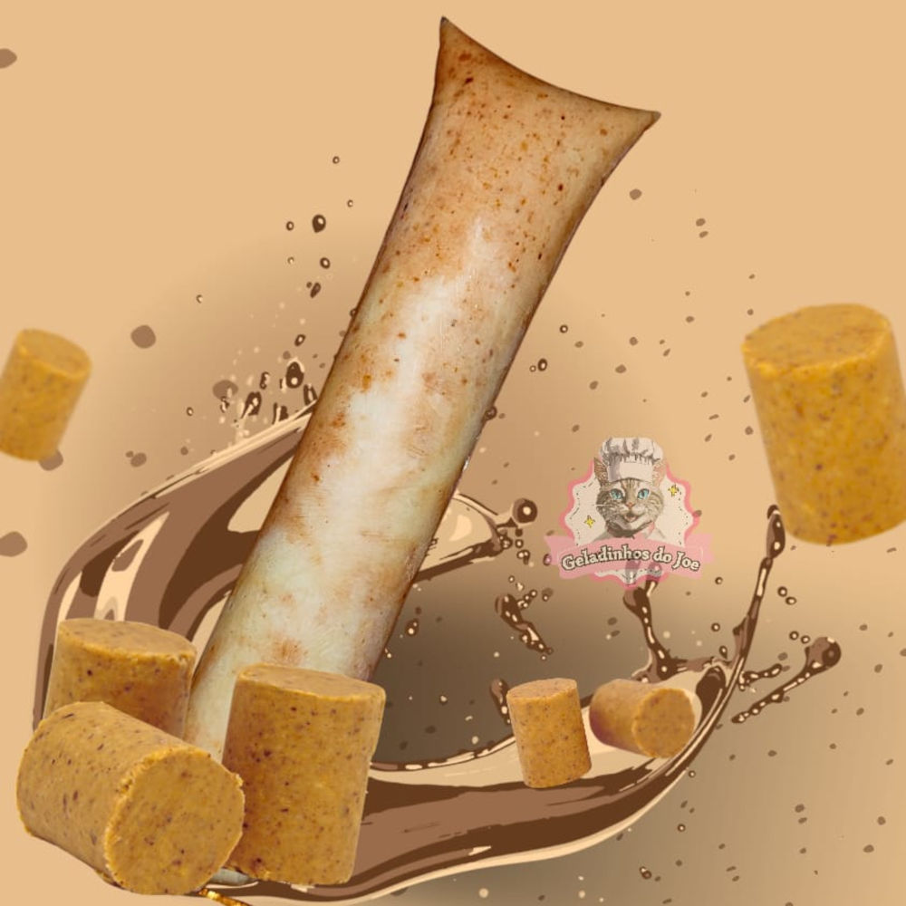

Nós somos a Geladinhos do Joe, criada inicialmente com o intuito de vendas de Geladinhos Gourmet, e estamos expandindo para futuramente a venda de novos itens.
Nós somos uma equipe composta de duas pessoas e um gato, o qual é nosso mascote, esperamos trazer boas experiências gastronômicas e felicidade aos nossos clientes.
Nossos produtos
Geladinho de Pudim

O nosso geladinho de pudim é feito com muito carinho, ele é uma das sobremesas tradicionais em formato de geladinho, ao mesmo tempo que você sente o sabor de pudim, também sente a refrescância de uma sobremesa gelada.
Geladinho de Chocolate

Nosso geladinho de chocolate, feito com cacau 50%, uma intensidade de sabor e cremosidade, equilibrado em açúcar e feito com muito carinho.
Geladinho de Ninho com Doce de leite

Um dos queridinhos da galera! Feito com doce de leite caseiro, uma base de ninho sem igual, super cremoso, equilibrado e delicioso!
Geladinho de ninho com paçoca

Nosso geladinho de ninho com paçoca é feito com um creme de paçoquinha, com pedaços crocantes de amendoim, receita da casa, uma cremosidade com um toque de crocância, equilibrado em açúcares e feito com muito carinho!